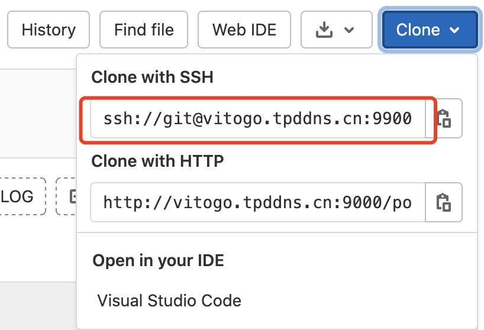
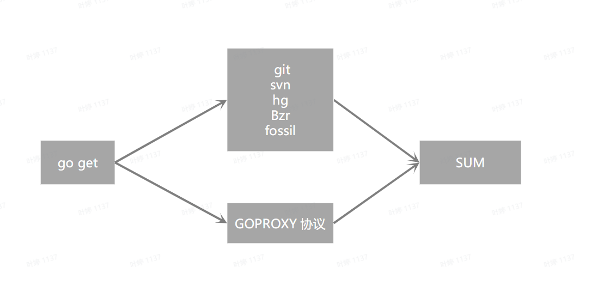

Go Module：私有不合规库怎么解决引用问题
大家好，我是 polarisxu。
有一个朋友咨询一个问题：
实际项目中，使用 Go Module 难免会有一些自己的库要引用，这些库使用自建的 Git 服务管理，比如 GitLab 等。针对这样的情况，不少教程都是让设置 GOPRIVATE，即不走 GOPROXY。
然而，有些时候，不仅库是私有的，而且地址很可能不是「合规」的。什么是「不合规」的？
- 不是 HTTPS
- 非 443 或 80 端口
- 直接使用 IP 地址
不是 HTTPS 问题不大，主要是非 443 或 80，以及直接 IP 地址的问题比较大。因为 Go 不支持下面的语法：
import "studygolang.com:8081/polarisxu/util"
import "192.168.1.1:80/polarisxu/util"
一般地，我们应该避免出现这样的情况，毕竟太恶心，而且没必要自讨苦吃。
但万一遇到了，怎么办？本文就探讨这个问题。
01 模拟环境
因为之前没遇到这样的问题，为了我更好的解决，这位朋友直接提供了他的环境供我试验。我注册了账号，并创建了一个仓库 testgo：http://vitogo.tpddns.cn:9000/polarisxu/testgo 。（为了方便，这个仓库是 public）
提示：你想试验，可以自己注册一个账号试试。当然，也可以通过 gitlab 本地搭建一个。
仓库中创建文件 testgo.go，内容如下：
package testgo
func MyName() string {
return "polarisxu"
}
关键是这个库的 go.mod 如何写？
很显然，我们不能直接用 vitogo.tpddns.cn:9000/polarisxu/testgo 这样的 module 名称。
02 module 名称
那怎么办？
我们可以借助 git 的功能，将 vitogo.tpddns.cn:9000 替换掉：（也可以直接修改 ~/.gitconfig 文件）
git config --global url."http://vitogo.tpddns.cn:9000/".insteadof "https://{{gitlab_url}}/"
这里有两点需要注意：
1）url 后面的内容，具体什么值，需要根据你的情况定。
可以通过你的自建仓库查看：

这里选择 HTTP 方式（因为我创建了一个 public 仓库）。也可以选择使用 ssh 方式，这样即使私有仓库，你配置上自己的 SSH KEY 也可正常 Pull。（如何配置 SSH KEY，网上很容易查到教程，GitHub 上就有）
我们这里使用了 http://vitogo.tpddns.cn:9000/，表示这个域名下所有的内容。
2）insteadOf 后面的内容，表示访问这个链接时，将替换为上面 url 后的链接。
这个值写什么？很显然，必须是合规的域名。我们任意使用一个域名试试，比如使用 https://studygolang.com/。
这时，我们尝试执行如下命令：
$ git config --global url."http://vitogo.tpddns.cn:9000/".insteadof "https://studygolang.com/"
# 让 studygolang.com 不走 GOPROXY
$ go env -w GOPRIVATE=studygolang.com
$ go get -v studygolang.com/polarisxu/testgo
go get: unrecognized import path "studygolang.com/polarisxu/testgo": parsing studygolang.com/polarisxu/testgo: XML syntax error on line 15: unescaped < inside quoted string
很好理解，go get 最终需要将代码下载下来，怎么下载？这张图很好的说明了：

那 go get 怎么知道当前仓库使用 VCS 托管的呢？对于 studygolang.com 这种域名，它会尝试请求，判断 CVS 类型。很显然，studygolang.com 没有做任何处理，不是 CVS 类型，所以报错。
关于这个过程感兴趣的，可以参考该文：https://studygolang.com/articles/35235
网友希望使用 vitogo.tpddns.cn 这个他的域名，但同样有这个问题。如果要让它正常，需要做特殊处理，具体参考上面的文章。
所以，我们使用一个非常用的现成 Git 公开托管服务，比如 gitea.com。（polarisxu/testgo 我打了一个 tag：v0.0.1）
$ git config --global url."http://vitogo.tpddns.cn:9000/".insteadof "https://gitea.com/"
$ go env -w GOPRIVATE=gitea.com
$ go get -v gitea.com/polarisxu/testgo
get "gitea.com/polarisxu/testgo": found meta tag vcs.metaImport{Prefix:"gitea.com/polarisxu/testgo", VCS:"git", RepoRoot:"https://gitea.com/polarisxu/testgo.git"} at //gitea.com/polarisxu/testgo?go-get=1
go: downloading gitea.com/polarisxu/testgo v0.0.1
gitea.com/polarisxu/testgo
成功了！你可以到 $GOPATH/pkg/mod 下面看是否有对应的包。
注意其中
?go-get=1这个参数，你可以浏览器访问 https://gitea.com/polarisxu/testgo?go-get=1 ，然后查看源码，看看里面是什么内容：<!doctype html> <html> <head> <meta name="go-import" content="gitea.com/polarisxu/testgo git https://gitea.com/polarisxu/testgo.git"> <meta name="go-source" content="gitea.com/polarisxu/testgo _ https://gitea.com/polarisxu/testgo/src/branch/master{/dir} https://gitea.com/polarisxu/testgo/src/branch/master{/dir}/{file}#L{line}"> </head> <body> go get gitea.com/polarisxu/testgo </body> </html>
因此，我们可以在 polarisxu/testgo 中增加 go.mod 文件：
go mod init gitea.com/polarisxu/testgo
然后打上第二个 tag：v0.0.2，再次获取：
$ go get -v gitea.com/polarisxu/testgo
get "gitea.com/polarisxu/testgo": found meta tag vcs.metaImport{Prefix:"gitea.com/polarisxu/testgo", VCS:"git", RepoRoot:"https://gitea.com/polarisxu/testgo.git"} at //gitea.com/polarisxu/testgo?go-get=1
go: downloading gitea.com/polarisxu/testgo v0.0.2
gitea.com/polarisxu/testgo
03 使用该包
本地创建一个项目，引用上面定义的包：
$ mkdir ~/testprivate
$ cd ~/testprivate
$ go mod init testprivate
$ touch main.go
在 main.go 中输入如下内容：
package main
import (
"fmt"
"gitea.com/polarisxu/testgo"
)
func main() {
fmt.Println("Hello", testgo.MyName())
}
执行 go mod tidy 后，运行：
$ go run main.go
Hello polarisxu
正常输出我们期望的结果。
04 总结
通过了解 go get 的基本原理，知晓 git 的一些处理方式，以及 GOPRIVATE 的作用。我相信遇到类似的问题，你自己也能够解决了。
注意，如果 gitea.com 你有实际使用，可以选择 gitee.com、try.gogs.io 等。
另外，关于本文的问题，Go 有几个相关 issue 讨论：
参考文章
- 私有化仓库的 GO 模块使用实践：https://studygolang.com/articles/35235
- go modules 使用本地库、合规库、私有库：https://studygolang.com/articles/35234